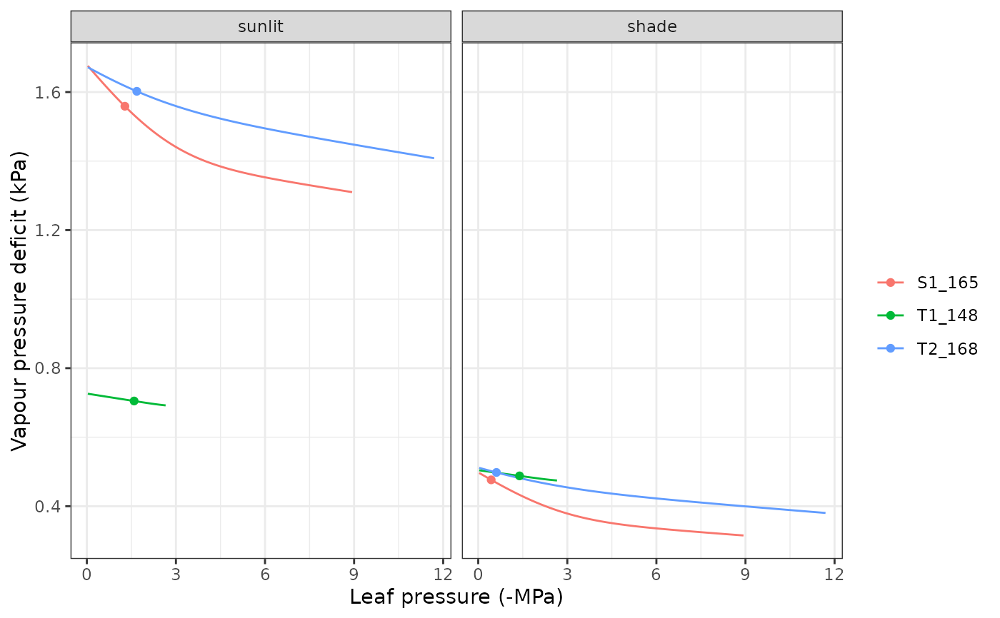

transp_stomatalregulation.RdSet of high-level functions used in the calculation of stomatal conductance and transpiration. Function transp_profitMaximization calculates gain and cost functions, as well as profit maximization from supply and photosynthesis input functions. Function transp_stomatalRegulationPlot produces a plot with the cohort supply functions against water potential and a plot with the cohort photosynthesis functions against water potential, both with the maximum profit values indicated.
transp_profitMaximization(supplyFunction, photosynthesisFunction, Gswmin, Gswmax, gainModifier = 1.0, costModifier = 1.0, costWater = "dEdP") transp_stomatalRegulationPlot(x, meteo, day, timestep, latitude, elevation, slope = NA, aspect = NA, type="E")
| supplyFunction | Water supply function (see |
|---|---|
| photosynthesisFunction | Function returned by |
| Gswmin, Gswmax | Minimum and maximum stomatal conductance to water vapour (mol·m-2·s-1). |
| gainModifier, costModifier | Modifiers (exponents) of the gain and cost functions defined in Sperry et al. (2017). |
| costWater | Cost water function, either "dEdP" (default) or "kterm" (experimental). |
| x | An object of class |
| meteo | A data frame with daily meteorological data series:
|
| day | An integer to identify a day within |
| timestep | An integer between 1 and |
| latitude | Latitude (in degrees). |
| elevation, slope, aspect | Elevation above sea level (in m), slope (in degrees) and aspect (in degrees from North). |
| type | A string with plot type, either |
Function transp_profitMaximization returns a list with the following elements:
Cost: Cost function [0-1].
Gain: Gain function [0-1].
Profit: Profit function [0-1].
iMaxProfit: Index corresponding to maximum profit (starting from 0).
Sperry, J. S., M. D. Venturas, W. R. L. Anderegg, M. Mencuccini, D. S. Mackay, Y. Wang, and D. M. Love. 2017. Predicting stomatal responses to the environment from the optimization of photosynthetic gain and hydraulic cost. Plant Cell and Environment 40, 816-830 (doi: 10.1111/pce.12852).
Miquel De Cáceres Ainsa, CREAF
transp_transpirationSperry, hydraulics_supplyFunctionNetwork, biophysics_leafTemperature, photo_photosynthesis, spwb_day, plot.spwb_day
#Load example daily meteorological data data(examplemeteo) #Load example plot plant data data(exampleforestMED) #Default species parameterization data(SpParamsMED) #Initialize soil with default soil params (2 layers) examplesoil = soil(defaultSoilParams(2)) #Initialize control parameters control = defaultControl(transpirationMode="Sperry") #Initialize soil with default soil params (2 layers) examplesoil2 = soil(defaultSoilParams(2)) #Initialize input x2 = forest2spwbInput(exampleforestMED,examplesoil2, SpParamsMED, control) # Stomatal VPD curve and chosen value for the 12th time step at day 100 transp_stomatalRegulationPlot(x2, examplemeteo, day=100, timestep = 12, latitude = 41.82592, elevation = 100, type="VPD")